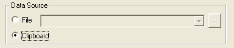

FAQ-414 Wie kann ich Daten aus der Zwischenablage oder einer Webseite importieren?
Import-from-Clipboard-or-Web
Letztes Update: 07.09.2020
- Kopieren Sie die Daten aus Ihrer Anwendung oder von der Webseite.
- Öffnen Sie in Origin den Importassistenten, indem Sie auf Datei: Import: Importassistent oder auf die Symbolleistenschaltfläche Importassistent
 klicken.
klicken.
- Setzen Sie die Datenquelle auf Zwischenablage und gehen Sie durch die Seiten des Importassistenten.
- Klicken Sie auf Fertigstellen, um den Importvorgang abzuschließen.
- 
Hinweise:- Neuere Versionen von Origin unterstützen den direkten Import von Webdaten mit Hilfe von Datenkonnektoren. Datenkonnektoren unterstützen alle gängigen Formate von Webdaten. Weitere Informationen finden Sie unter Mit Web verbinden.
- Wenn Sie Zeichenketten aus der Zwischenablage in Origin einfügen, sollten Sie diese FAQ lesen.
|
Schlüsselwörter:Kopieren